Zaägox-Potysasisemüsie
자야고시 카드게임
자야고시 플레이 방법 소개 프레젠테이션
방향키로 화면 전환하기, Shift로 흐림 해제하기!
자야고시 플레이 방법 소개 프레젠테이션
방향키로 화면 전환하기, Shift로 흐림 해제하기!
자야고시는 디도포이카스 덱을 이용한 카드게임이다.
카드 네 장을 빨리 모으는 사람이 게임에서 승리한다.
최강 족보! 색5종 강연결 수5종 양4종 → 4096점
디도포이카스 카드는 적, 황, 녹, 청의 4가지 색과
1부터 8까지의 수로 이루어져 있으며, 총 4장의 공패(空牌)가 있다.
| 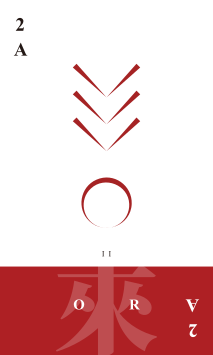 | 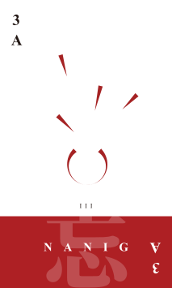 | 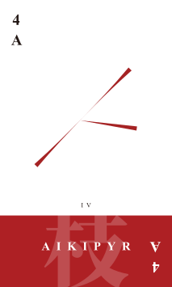 | 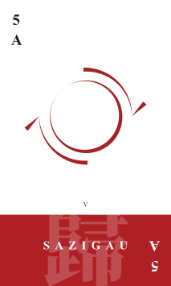 | 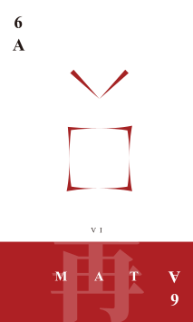 | 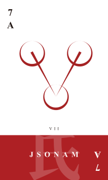 | 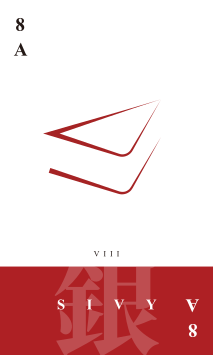 | ||
| 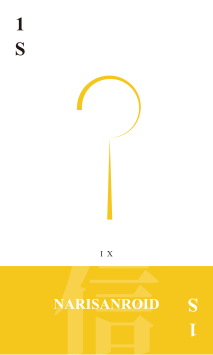 | 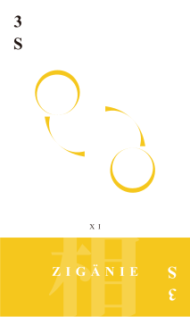 | 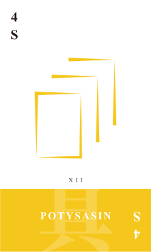 | 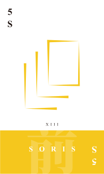 | 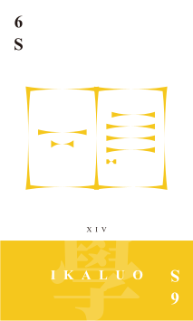 | 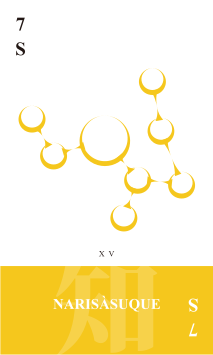 | 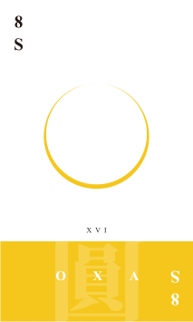 | 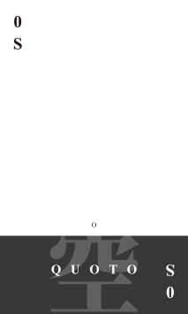 | |
| 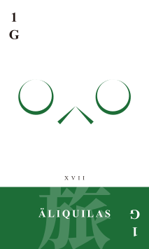 | 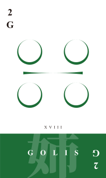 | 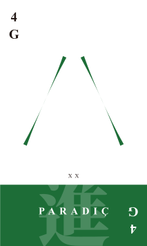 | 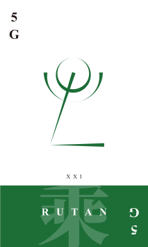 | 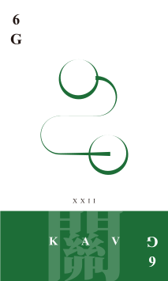 | 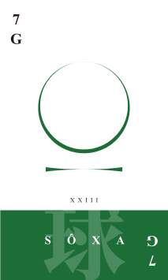 | 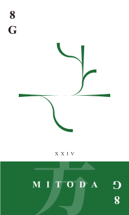 | ||
| 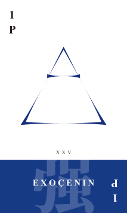 | 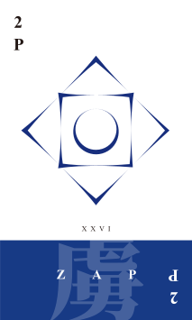 | 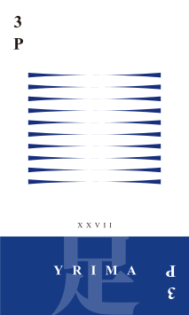 | 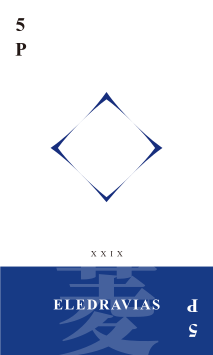 | 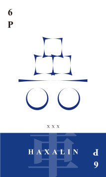 | 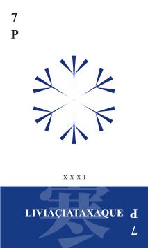 | 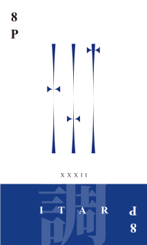 | 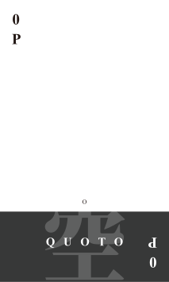 |
자야고시는 다른 사람보다 더 일찍 화려한 족보를 만들면 승리한다.
위에 있는 족보는 아래쪽에 있는 족보보다 더욱 다양한 패를 모았기 때문에 더 높은 점수로 친다.
위쪽에 있는 족보는 144점, 아래쪽에 있는 족보는 8점짜리 족보이다.
자야고시는 다음 흐름으로 진행된다.
자야고시를 즐기기 위해서는 몇가지 준비물이 필요하다.
일단 자야고시를 플레이할 사람 2–4명이 필요하고,
공패 4장이 포함된 디도포이카스 덱 1개가 필요하다.
선을 정하기 위해 D6 주사위 2개를 사용하기도 하지만, 꼭 필요한 것은 아니다.
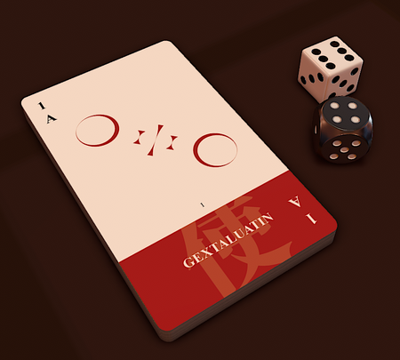주사위를 굴려서 나온 순의 수만큼 반시계방향으로 세어서 선을 정한다.
이때 주사위를 굴린 사람을 0으로 하여 수를 센다.
게임을 한 판 하고 다시 시작하는 경우에는 이전 게임에서 승리한 사람이 주사위를 굴린다.
위 그림에서 주황색 위치에 앉은 사람이 주사위를 굴렸을 때, 파란색 위치의 사람이 선이 된다.
선은 카드를 섞고 참여하는 모든 사람에게 카드를 4장씩 나누어준다. 이 카드를 손패라고 한다.
이때 나누어주고 남은 카드는 테이블 중앙에 엎어놓는다. 이 카드를 중앙패라고 한다.
자신의 턴이 되면 중앙패에서 카드 한 장을 가져온다.
이때, ① 필요없는 패를 버리거나, ② 패쌍을 만들거나, ③ 패쌍을 숙성할 수 있다.
만약 ① 패 버리기를 한다면,
필요없는 패 한 장을 선택하여 테이블 중앙에 놓는다.
이 패를 버림패라고 하고,
버림패는 다른 사람이 볼 수 있도록 뒤집어 놓는다.
② 패쌍 만들기를 하려면 수가 같은 패가 2장 있어야 한다.
이것을 등록이라고 한다.
패쌍은 카드 두 장을 자신의 앞에 다른 사람이 볼 수 있도록 함께 뒤집어놓는 것을 말한다.
패쌍을 이루는 패를 패쌍패라고 한다.
위 손패의 경우 4패가 2장 있으므로 4로 패쌍을 만들 수 있다.
패쌍을 만들어서 패쌍 숙성이 완료되면 패쌍패 중 하나를 보관할 수 있는데,
바로 이 보관패로 족보싸움을 하게 된다.
③ 패쌍 숙성하기를 하려면 자신의 앞에 패쌍이 있어야 한다.
가지고 있는 카드 한 장을 아무거나 골라 패쌍 위에 엎어놓으면 패쌍을 숙성한 것이 된다.
숙성에 사용하는 카드를 숙성패라고 한다.
카드의 수에 해당하는 만큼 숙성패가 모이면, 패쌍패 중 하나를 보관할 수 있다.
이때, 5, 6, 7, 8은 각각 1, 2, 3, 4장이 모여야 하고,
공패는 한 장도 모이지 않아도 된다. 즉, 공패는 등록하는 즉시 보관할 수 있다.
숙성이 완료된 패쌍은 보관할 패쌍패를 제외하고 다시 중앙패의 아래쪽에 놓는다.
또는, 버림패 위에 그대로 올릴 수 있다.
보관패는 다른 사람이 볼 수 있도록 뒤집어서 자신의 앞에 놓는다.
↓
다시 중앙패에 올리는 패들은 기존의 중앙패 아래쪽에
중앙패-숙성패-패쌍패 순으로 넣어놓는다.
자신의 턴이 끝나면 자신의 오른쪽에 앉은 사람이 다음 턴을 진행한다.
만약 자신이 가지고 있는 것과 같은 수의 패를 다른 사람이 버린 경우,
“다”를 선언하고 해당 패를 가져올 수 있다.
다른 사람이 1패를 버렸을 때, 나도 1패를 가지고 있으므로 다 선언 가능!
다를 선언하려면 “다”라고 소리내서 말해야 한다.
여러 사람이 다를 외쳤을 때, 더 먼저 외친 사람이 카드를 가져가게 되기 때문이다.
다를 선언한 패는 자신의 패와 함께 패쌍으로 만든다.
그리고 다를 선언한 사람의 오른쪽에 앉은 사람이 다음 턴을 진행한다.
가지고 있는 모든 카드가 끝나고, 패쌍도 없어진다면 즉시 게임에서 승리하게 된다.
이때, 플레이어들은 승리한 사람의 보관패를 보고 점수를 계산한다.
점수를 계산할 때에는 일단 보관패를 이루고 있는 카드의 수와 색,
카드에 그려진 모양의 개수를 확인한다.
4장의 카드가 위와 같이 이루어져 있다면 색이 3가지 종류이므로 색3종이라고 한다.
비슷한 방식으로 색1종, 색2종, 색4종이 있다.
공패는 색이 없는 것으로 치므로, 공패를 제외하고 종류를 계산해야 한다.
색 종류와 함께, 수 종류도 확인한다.
위 패들은 2, 7, 3, 4로 이루어져 있으므로 수4종…일 것 같지만,
1과 5, 2와 6, 3과 7, 4와 8은 같은 수로 취급하므로 수3종이다.
비슷한 방식으로 수1종, 수2종, 수4종이 있다.
공패는 수가 없는 것으로 치므로, 공패를 제외하고 종류를 계산해야 한다.
수4종은 또 강연결과 약연결로 나뉜다.
강연결은 1, 2, 3, 4나 5, 6, 7, 8로 수4종을 만든 경우,
약연결은 나머지로 수4종을 만든 경우를 말한다.
위 두 경우는 모두 강연결 수4종이다.
카드에 그려진 그림으로도 종류를 계산한다.
카드에 그려진 그림이 완벽한 원으로만 이루어져있다면 원패,
완벽한 원이 하나도 없다면 선패,
완벽한 원과 선이 섞여있다면 혼패,
그림이 없다면 공패라고 한다.
위 패들은 각각 혼패, 혼패, 혼패, 원패이므로 양2종이다.
같은 방식으로 양1종, 양3종, 양4종도 있다.
이 경우에는 공패도에 모양이 있는 것으로 본다! ☆☆☆
위 보관패는 4개의 색으로 이루어져 있으므로 색4종,
1, 6, 7, 8로 이루어져 있으므로 약연결 수4종,
혼패, 원패, 혼패, 선패로 이루어져 있으므로 양3종이다.
일단 4장을 모으면 기본 점수 2점이 제공된다.
이후, 다음 표에서 점수 계산 방법을 알아낸다.
| 모양 | 색 | 수 | ||
|---|---|---|---|---|
| 5종 | 강연결 | - | ^2 | ^3 |
| 약연결 | ^2 | |||
| 4종 | 강연결 | ^2 | ×3 | ^2 |
| 약연결 | ×3 | |||
| 3종 | ×2 | ×2 | ×2 | |
| 2종 | +1 | +1 | +1 | |
| 1종 | -1 | -2 | -2 | |
만약 양2종, 색3종, 강연결 수4종이라면 각각 +1, ×2, ^2인 것이다.
이때, 덧셈, 뺄셈을 가장 먼저 하고 그 다음에 곱셈, 그 다음에 제곱셈을 수행한다.
따라서 위 족보에 대한 점수는 \(((2+1) \times 3)^2\)로, 36점이다.
다음 보관패의 점수를 계산해보자!
|
|
||||||||||||||||||||||||||||||||||
이 카드는 빨강과 초록, 두 색으로 이루어져 있으므로 색2종,
1, 3, 1, 5로 이루어져 있으므로 수2종,
각각 혼패, 선패, 혼패, 혼패이므로 양2종이다.
따라서 색2종, 수2종, 양2종이므로 \(2+1+1+1 = 5\)점짜리 족보가 된다.
다음 보관패의 점수를 계산해보자!
|
|
||||||||||||||||||||||||||||||||||
이 카드는 빨강, 노랑, 초록, 검정의 네 색으로 이루어져 있지만 공패는 색으로 치지 않으므로 색3종,
8, 5, 6, 0으로 이루어져 있지만 공패는 수로 치지 않으므로 수3종,
각각 선패, 선패, 혼패, 공패이므로 양3종이다.
따라서 색3종, 수3종, 양3종이므로 \(2 \times 2 \times 2 \times 2 = 16\)점짜리 족보가 된다.
4개짜리 보관패를 모은 후에 바로 승리할 수도 있지만, 아바를 선언할 수 있다.
아바를 선언하면 중앙패에서 패 한 장을 더 가져와 5개짜리 보관패를 만들어야 한다.
5개짜리 보관패를 만드는 경우 대부분의 경우 족보에 의한 점수가 더 높아지지만,
5개짜리 보관패를 만드는 동안 다른 사람이 게임에서 승리할 수 있어서 위험하다.
아바를 선언하고 게임에서 승리하지 못하면 게임에서 승리한 사람에게
패배한 사람의 점수까지를 모두 독박써야 하므로 또 다른 위험부담도 따른다.
아바 선언 시에는 5종 족보까지 만들 수 있다.
5종 족보를 만들 때에는 공패의 수와 색을 인정하지만, 5장을 모아도 4종 족보까지는 4종 규칙을 따른다.
다음 보관패의 점수를 계산해보자!
|
|
||||||||||||||||||||||||||||||||||
이 카드는 노랑, 초록, 파랑, 검정으로 이루어져 있지만 공패는 색으로 치지 않으므로 색3종,
7, 3, 6, 1, 0으로 이루어져 있지만 공패는 수로 치지 않으므로 약연결 수4종...일 것 같지만
5종 족보에서는 공패도 수로 치므로 약연결 수5종,
각각 혼패, 선패, 혼패, 선패, 공패이므로 양3종이다.
따라서 색3종, 약연결 수5종, 양3종이므로 \((2 \times 2 \times 2)^2 = 64\)점짜리 족보가 된다.
모든 설명이 끝났다! 이제 자야고시를 플레이할 수 있다.
자야고시는 점수 게임이므로 점당 몇 점씩 하여 내기를 할 수도 있다.
평균적으로 승리 당 16점정도를 얻게 되므로, 참고하여 게임을 진행하자.
자야고시 플레이 방법 소개 프레젠테이션
끝